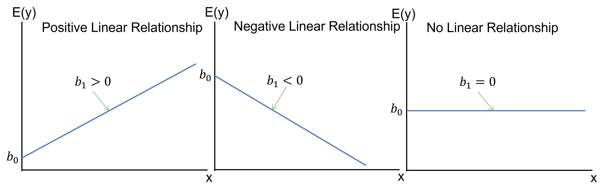
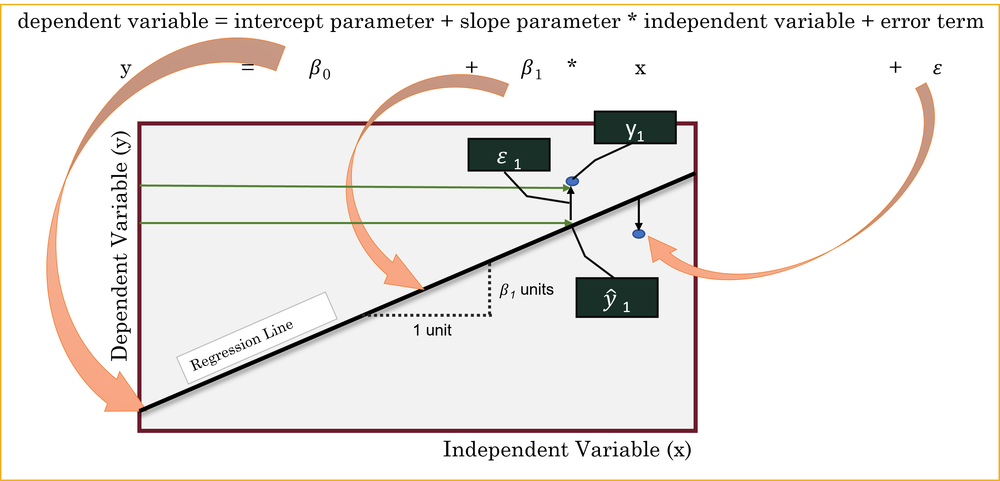
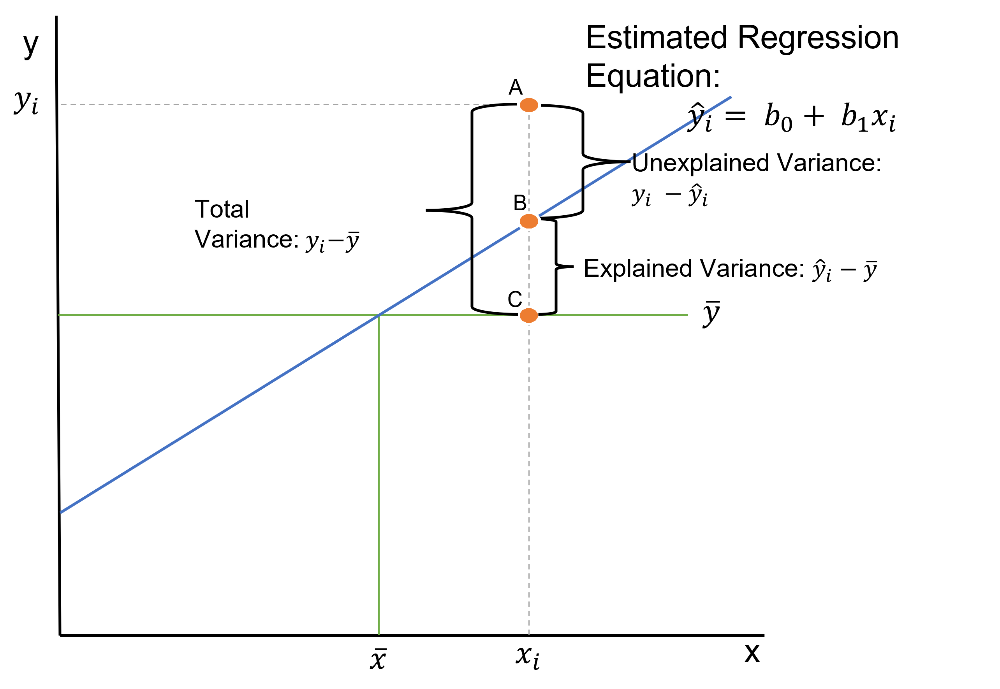
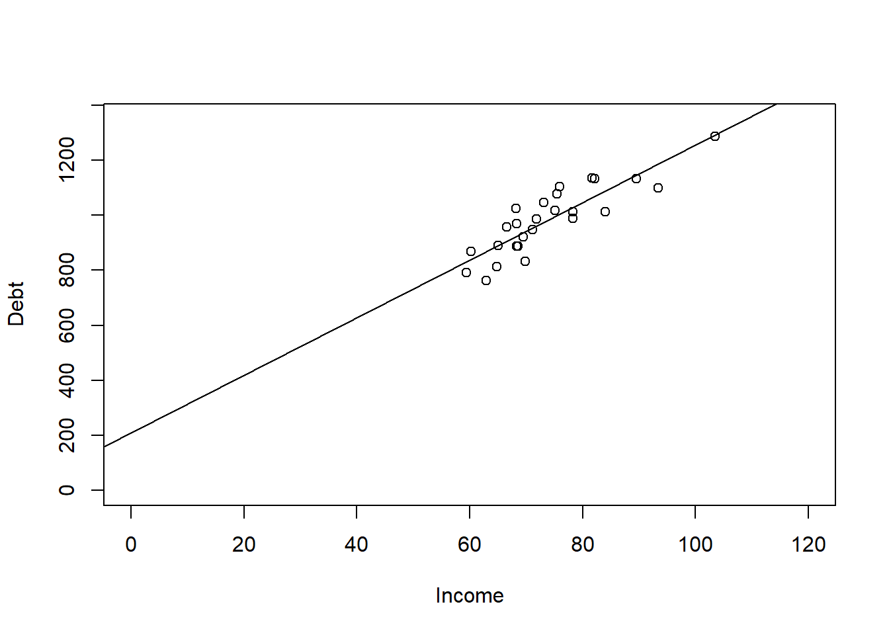

####################################
# Project name: Linear Regression Analysis
# Data used: Debt_Payments.csv, months.csv, GNP.csv, corolla.csv
# Credit from ISLR library
# Libraries used: tidyverse, ggplot2, ISLR, car
####################################11 Linear Regression Analysis
- The main goal of this section is to understand and conduct regression analysis interpret its results. In doing so, we will learn about the regression model and its components, including how to compute the slope and intercept for a simple linear regression, and the multiple slopes and intercept for a multiple linear regression. Finally, we will learn how to interpret the regression output from R.
11.0.1 At a Glance
- In order to succeed at this lesson, you will use a statistical model, called linear regression, that helps us understand an outcome variable and also allows us to make predictions for future instances, or the next occurrence. A linear regression model is quite commonly used in many fields and is often the foundation for future more advanced analysis like machine learning. Linear regression can be a fairly easy way to design and test a research model, and in doing so allows us to gauge helpful predictor variables in understanding a phenomenon. Not only can we understand a research model, but we can also make stronger predictions on the future.
11.0.2 Lesson Objectives
- Explore the statistical model for a line.
- Compute the slope and intercept in a simple linear regression.
- Interpret a regression model significance and model fit.
11.0.3 Consider While Reading
- This lesson allows us to look at inference for correlation and inference for regression analysis. Where an ANOVA is mostly concerned about differences between means of categorical data, linear regression is mostly concerned about correctly estimating response or prediction while also forming a regression line. We will learn how to conduct a single and multiple linear regression test. This will close the loop on scatterplots, which we learned in the data visualization lesson to help us describe visually a relationship between variables. Consider what we learned and perhaps revisit the scatterplot lecture notes to then determine how visualizations can help in making inferences alongside regression and correlation results.
11.1 The Linear Regression Model
11.1.1 Overview of the Linear Regression
- Linear regression analysis is a predictive modelling technique used for building mathematical and statistical models that characterize relationships between a dependent (continuous) variable and one or more independent, or explanatory variables (continuous or categorical), all of which are numerical.
- This technique is useful in forecasting, time series modelling, and finding the causal effect between variables.
- Simple linear regression involves one explanatory variable and one response variable.
- Explanatory variable: The variable used to explain the dependent variable, usually denoted by X. Also known as an independent variable or a predictor variable.
- Response variable: The variable we wish to explain, usually denoted by Y. Also known as a dependent variable or outcome variable.
- Multiple linear regression involves two or more explanatory variables, while still only one response variable.
12 Examples of Independent and Dependent Variables
- Example Question: Does increasing the marketing budget lead to higher sales revenue?
- Independent Variable: Marketing budget (how much money is spent on advertising and promotions).
- Dependent Variable: Sales revenue (how much income the business generates from sales).
- Example Question: Does additional training improve employee productivity?
- Independent Variable: Hours of employee training.
- Dependent Variable: Employee productivity (e.g., units produced per hour or sales closed per month).
- Example Question: Does being a member of a loyalty program increase the frequency of repeat purchases?
- Independent Variable: Participation in a loyalty program (whether a customer is a member or not).
- Dependent Variable: Number of repeat purchases by the customer.
12.0.1 Estimating Using a Simple Linear Regression Model
- While the correlation coefficient may establish a linear relationship, it does not suggest that one variable causes the other.
- With regression analysis, we explicitly assume that the response variable is influenced by other explanatory variables.
- Using regression analysis, we may predict the response variable given values for our explanatory variables.
12.0.2 Inexact Relationships
- If the value of the response variable is uniquely determined by the values of the explanatory variables, we say that the relationship is deterministic.
- But if, as we find in most fields of research, that the relationship is inexact due to omission of relevant factors, we say that the relationship is inexact.
- In regression analysis, we include a stochastic error term, that acknowledges that the actual relationship between the response and explanatory variables is not deterministic.
12.0.3 Regression as ANOVA
- ANOVA conducts an F - test to determine whether variation in Y is due to varying levels of X.
- ANOVA is used to test for significance of regression:
- \(H_0\): population slope coefficient \(\beta_1\) \(=\) 0
- \(H_A\): population slope coefficient \(\beta_1\) \(\neq\) 0
- R reports the p-value (Significant F).
- Rejecting \(H_0\) indicates that X explains variation in Y.

12.0.4 The Simple Linear Regression Model
- The simple linear regression model is defined as \(y= \beta_0+\beta_1 𝑥+\varepsilon_1\), where \(y\) and \(x\) are the response and explanatory variables, respectively and \(\varepsilon_1\) is the random error term. \(\beta_0\) and \(\beta_1\) are the unknown parameters to be estimated.
- By fitting our data to the model, we obtain the equation \(\hat{y} = b_0 + b_1*x\), where \(\hat{y}\) is the estimated response variable, \(b_0\) is the estimate of \(\beta_0\) (Intercept) and \(b_1\) is the estimate of \(\beta_1\) (Slope).
- Sometimes, this equation can be represented using different variable names like \(y=mx+b\) This is the same equation as above, but different notation.
- Since the predictions cannot be totally accurate, the difference between the predicted and actual value represents the residual \(e=y-\hat{y}\).

12.0.5 The Least Squares Estimates
- The two parameters \(\beta_0\) and \(\beta_1\) are estimated by minimizing the sum of squared residuals.
- The slope coefficient \(\beta_1\) is estimated as \(b_1 = \sum(x_i-\bar{x}*y_i-\bar{y})/\sum(x_i-\bar{x})^2\)
- The intercept parameter \(\beta_0\) is estimated as \(b_0 = \hat{y}-b_1*\bar{x}\)
- And we use this information to make the regression equation given the formula above: \(\hat{y} = b_0 + b_1*x\),
12.0.6 Goodness of Fit
- Goodness of fit refers to how well the data fit the regression line. I will introduce three measures to judge how well the sample regression fits the data.
- Standard Error of the Estimate
- The Coefficient of Determination (\(R^2\))
- The Adjusted \(R^2\)
- In order to make sense of the goodness of fit measures, we need to go back to the idea of explained and unexplained variance we learned in the ANOVA lesson. Variance can also be known as a difference.
- Unexplained Variance = SSE or Sum of Squares Error: This equals the sum of squared difference between A and B, or between the sum of squares of the difference between observation (\(y_i\)) and our predicted value of y (\(\hat{y}\)).
- \(SSE = \sum^n_{i=1}(y_i - \hat{y})^2\)
- Explained Variance = SSR or Sum of Squares Regression: This equals the sum of squared difference between B and C, or between the sum of squares of the difference between our predicted value (\(\hat{y}\)) and the mean of y (\(\bar{y}\)).
- \(SSR = \sum^n_{i=1}(\hat{y} - \bar{y})^2\)
- Total Variance = SST or Total Sum of Squares: This equals the sum of squared difference between A and C, or between the sum of squares of the difference between observation (\(y_i\)) and the mean of y (\(\bar{y}\)).
- The SST can be broken down into two components: the variation explained by the regression equation (the regression sum of squares or SSR) and the unexplained variation (the error sum of squares or SSE).
- \(SST = \sum^n_{i=1}(y_i - \bar{y})^2\)

12.0.7 The Standard Error of the Estimate
- The Standard Error of the Estimate, also known as the Residual Standard Error (RSE) (and labelled such in R), is the variability between observed (\(y_i\)) and predicted (\(\hat{y}\)) values, targeting the unexplained variance in the figure above. This measure is a lack of fit of the model to the data.
- To compute the standard error of the estimate, we first compute the SSE and the MSE.
- Sum of Squares Error: \(SSE = \sum^n_{i=1}e^2_i = \sum^n_{i=1}(y_i - \hat{y})^2\)
- Dividing SSE by the appropriate degrees of freedom, n – k – 1, yields the mean squared error:
- Mean Squared Error: \(MSE = SSE/(n-k-1)\)
- The square root of the MSE is the standard error of the estimate, se.
- Standard Error of Estimate: \(se = \sqrt(MSE) = \sqrt(SSE/(n-k-1))\)
12.0.8 The Coefficient of Determination (\(R^2\))
Coefficient of determination refers to the percentage of variance in one variable that is accounted for by another variable or by a group of variables.
This measure of R-squared is a measure of the “fit” of the line to the data.
The Coefficient of Determination, denoted as \(R^2\), is a statistical measure that indicates the proportion of variance in the dependent variable (\(y\)) that is explained by the independent variable(s) (x) in a regression model. It is calculated as: SSR/SST or 1-SSE/SST. *\(R^2\) ranges from 0 to 1:
- \(R^2\)=0: None of the variance in \(y\) is explained by the model.
- \(R^2\)=1: The model explains all the variance in y. A higher \(R^2\) indicates a better fit of the model to the data.
\(R^2\) = 1-SSE/SST where \(SSE = \sum^n_{i=1}(y_i - \hat{y})^2\) and \(SST = \sum^n_{i=1}(y_i - \bar{y})^2\)
- \(R^2\) can also be computed by SSR/SST, which provides the same answer as above.
- This measure of fit targets both the unexplained and the explained variance.
- \(R^2\) can also be calculated using the formula for Pearson’s r and squaring it. This gives us the same answer.
Pearson’s \(r\) is a statistic that indicates the strength and direction of the relationship between two numeric variables that meet certain assumptions.
- (Pearson’s \(r\))\(^2\) = \(r^2_{xy} = (cov_{xy}/(s_x*s_y))^2\).
You need to see how all these formulas relate to see why all these formulas give you the same answer.
12.0.8.1 Interpreting (\(R^2\))
- This measure is easier to interpret over standard error. In particular, the (\(R^2\)) quantifies the fraction of variation in the response variable that is explained by changes in the explanatory variables.
- The (\(R^2\)) gives you a score between 0 and 1. A score of 1 indicates that your Y variable is perfectly explained by your X variable or variables (where we only have one in simple regression).
- The \(R^2\) measure has strength of determination like the correlation coefficient, only all measures are from 0 to 1.
- The closer you get to one, the more explained variance we achieve.
- A score of 0 indicates that no variance is explained by the X variable or variables. In this case, the variable would not be a significant predictor variable of Y.
- Again, the strength of the relationship varies by field, but generally, a .2 to a .5 is considered weak, a .5 to a .8 is considered moderate, and above a .8 is considered strong.
12.0.8.2 R Output
- We do see the \(R^2\) in our R output labelled Multiple R-squared.
12.0.8.3 Limitations of The Coefficient of Determination (\(R^2\))
- More explanatory variables always result in a higher \(R^2\).
- But some of these variables may be unimportant and should not be in the model.
- This is only applicable with multiple regression, discussed below.
12.0.9 The Adjusted \(R^2\)
The Adjusted Coefficient of Determination, denoted as Adjusted \(R^2\) modifies \(R^2\) to account for the number of predictors in the model relative to the number of data points. It is calculated as Adjusted \(R^2 = 1-(1-R^2)*((n-1)/(n-k-1))\), where where n is the sample size and p is the number of predictors.
In simple linear regression, \(R^2\) is generally more appropriate than Adjusted \(R^2\) because there is only one predictor variable in the model.
The Adjusted \(R^2\) tries to balance the raw explanatory power against the desire to include only important predictors.
- Adjusted \(R^2 = 1-(1-R^2)*((n-1)/(n-k-1))\).
- The Adjusted \(R^2\) penalizes the \(R^2\) for adding additional explanatory variables.
12.0.9.1 R Output
- With our other goodness-of-fit measures, we typically allow the computer to compute the Adjusted \(R^2\) using commands in R.
- Therefore, we do see the Adjusted \(R^2\) in our R output labelled Adjusted R-squared.
12.0.10 Example of Simple Linear Regression in R
The broad steps are the same as we used in Chapter 6 and 7 when setting up the t-tests and ANOVA hypothesis: 1. set up the hypothesis 2. compute the Test Statistic and calculate probability 3. interpret results and write a conclusion.
Step 1: Set Up the Null and Alternative Hypothesis
\(H_0\): The slope of the line is equal to zero.
\(H_A\): The slope of the line is not equal to zero.
Step 2: Compute the Test Statistic and Calculate Probability
library(tidyverse)
library(ggplot2)Debt_Payments <- read.csv("data/DebtPayments.csv")
Simple <- lm(Debt ~ Income, data = Debt_Payments)
summary(Simple)
Call:
lm(formula = Debt ~ Income, data = Debt_Payments)
Residuals:
Min 1Q Median 3Q Max
-107.087 -38.767 -5.828 50.137 101.619
Coefficients:
Estimate Std. Error t value Pr(>|t|)
(Intercept) 210.298 91.339 2.302 0.0303 *
Income 10.441 1.222 8.544 9.66e-09 ***
---
Signif. codes: 0 '***' 0.001 '**' 0.01 '*' 0.05 '.' 0.1 ' ' 1
Residual standard error: 63.26 on 24 degrees of freedom
Multiple R-squared: 0.7526, Adjusted R-squared: 0.7423
F-statistic: 73 on 1 and 24 DF, p-value: 9.66e-09- Step 3: Interpret the Probability and Write a Conclusion
- We interpret the probability and write a conclusion after looking at the following:
- Goodness of Fit Measures
- The F-test statistic
- The p-value from the hypothesis
- We then can interpret the hypothesis and make the regression equation if needed to make predictions.
12.0.10.1 Examining the Goodness of Fit Measures
Like the ANOVA, we need the summary() command to see the regression output.
This output includes the following:
- Standard Error of Estimate at 63.26
- a \(R^2\) of 0.7526.
- an Adjusted \(R^2\) of 0.7423
We do not really see a difference in \(R^2\) and the Adjusted \(R^2\) because we only have a simple linear regression, which includes one X. The other thing that could create a difference between these measures is having a small sample size. A small sample size could adjust the \(R^2\) down (like it did a little here \(n=28\)). In both cases, a score around .75 indicates that we are explaining about 75% of the variance in Debt Payments, which is specifically stated as 75.26% in the \(R^2\) value.
The Standard Error of Estimate - known in R as the RSE or Residual Standard Error at 63.26. Before we interpret this, we need to know the scale, and income is in 1000s. Therefore, for every 1000 dollars difference in Income we could be off on our debt payments by 63.26 dollars.
Again, most statisticians interpret the \(R^2\) and the adjusted \(R^2\) over the RSE.
12.0.10.2 Examining the F-Test Statistic
- The F-statistic is a ratio of explained information (in the numerator) to unexplained information (in the denominator). If a model explains more than it leaves unexplained, the numerator is larger and the F-statistic is greater than 1. F-statistics that are much greater than 1 are explaining much more of the variation in the outcome than they leave unexplained. Large F-statistics are more likely to be statistically significant.
- We see a F-statistic in our output with a p-value of 9.66e-09, which is less than .05. This indicates that our overall model is significant, which in simple regression means that our one X predictor variable is also significant. If this F-statistic is significant, we can interpret the hypothesis.
12.0.10.3 Examining the Hypothesis
- We see a p-value on the Income row of 9.66e-09 from a t-value. This is also significant at .05 level. This p-value is the same as the F-test statistic because we only have one X variable.
- This significance means our predictor variable does influence the Y variable and that we can reject the null hypothesis and show support for our alternative hypothesis.
- This means Income does influence Debt Payments.
12.0.10.4 Interpreting the Hypothesis
- A \(b_1\) estimate of 10.441 indicates that for 1000 dollars of Income (again our data is in 1000s), the payment of dept will increase by 10.441.
- A \(b_0\) estimate of 210.298 indicates where the regression line will start given a Y at 0.
- This gives us a regression equation at \(\hat{y} = 210.298 + 10.441*Income\)
- We can graph this regression line using the abline() command on our plot we did earlier.
- As you can see from the chart, there was no data at the Y intercept, but if I extend the chart out, it does hit the y axis at 210 like stated.
- Also from the chart, we note that for each unit of income we go to the right, we go up by 10.441 units in dept payments.
plot(Debt ~ Income, data = Debt_Payments, xlim = c(0, 120), ylim = c(0,
1350))
abline(Simple)
12.0.11 Predictions
- We can calculate this using the regression equation or use the predict() command in order to calculate different values of y given values of x based on our regression equation we got in the step above.
- The coef() function returns the model’s coefficients which are needed to make the regression equation.
# What would be your debt payments if Income was 100 ( for 100,000)
coef(Simple)(Intercept) Income
210.29768 10.44111 210.298 + 10.441 * (100)[1] 1254.398predict(Simple, data.frame(Income = 100)) 1
1254.408 12.1 Multiple Regression
Multiple regression allows us to explore how several explanatory variables influence the response variable.
Suppose there are \(k\) explanatory variables. The multiple linear regression model is defined as: \(y = \beta_0 + \beta_1x_1 + \beta_2x_2 + \ ⋯ + \beta_kx_k +\varepsilon\)
Where:
- \(y\) is the dependent variable,
- \(x_1, ⋯, x_k\) are independent explanatory variables,
- \(\beta_0\) is the intercept term,
- \(\beta_1 ⋯, \beta_k\) are the regression coefficients for the independent variables,
- \(varepsilon\) is the random error term
We estimate the regression coefficients—called partial regression coefficients — \(b_0, b_1, b_2,… b_k\), then use the model: \(\hat{y} = b_0 + b_1x_1 + b_2x_2 + \ ... + b_kx_k\) .
The partial regression coefficients represent the expected change in the dependent variable when the associated independent variable is increased by one unit while the values of all other independent variables are held constant.
For example, if there are \(k = 3\) explanatory variables, the value \(b_1\) estimates how a change in \(x_1\) will influence \(y\) assuming \(x_2\) and \(x_3\) are held constant.
12.1.1 Example of Multiple Linear Regression in R
- The steps to multiple linear regression are the same as simple linear regression except we should have more than one hypothesis.
- Step 1: Set up the null and alternative hypotheses
- Hypothesis 1: Income affects Debt Payments.
- \(H_0\): The slope of the line in regards to Income is equal to zero.
- \(H_A\): The slope of the line in regards to Income is not equal to zero.
- Hypothesis 2: Unemployment affects Debt Payments.
- \(H_0\): The slope of the line in regards to Unemployment is equal to zero.
- \(H_A\): The slope of the line in regards to Unemployment is not equal to zero.
- Step 2: Compute the test statistic and calculate probability
Debt_Payments <- read.csv("data/DebtPayments.csv")
Multiple <- lm(Debt ~ Income + Unemployment, data = Debt_Payments)
summary(Multiple)
Call:
lm(formula = Debt ~ Income + Unemployment, data = Debt_Payments)
Residuals:
Min 1Q Median 3Q Max
-110.456 -38.454 -5.836 51.156 102.121
Coefficients:
Estimate Std. Error t value Pr(>|t|)
(Intercept) 198.9956 156.3619 1.273 0.216
Income 10.5122 1.4765 7.120 2.98e-07 ***
Unemployment 0.6186 6.8679 0.090 0.929
---
Signif. codes: 0 '***' 0.001 '**' 0.01 '*' 0.05 '.' 0.1 ' ' 1
Residual standard error: 64.61 on 23 degrees of freedom
Multiple R-squared: 0.7527, Adjusted R-squared: 0.7312
F-statistic: 35 on 2 and 23 DF, p-value: 1.054e-07- Step 3: Interpret the probability and write a conclusion
- We interpret the probability and write a conclusion after looking at the following:
- Goodness of Fit Measures
- The F-test statistic
- The p-values from the hypotheses
- We then can interpret the hypotheses and make the regression equation if needed to make predictions.
12.1.2 Examining the Goodness of Fit Measures
- Like the ANOVA, we need the summary() command to see the regression output.
- This output includes the following:
- Standard error of estimate at 64.61 - was previously 63.26 with simple regression.
- a \(R^2\) of 0.7527 - was previously 0.7526 with simple regression.
- an Adjusted \(R^2\) of 0.7312 - was previously 0.7423 with simple regression.
- Looking at the goodness of fit indices, they suggest that we are not explaining anything more by adding the unemployment variable over what we had with the Income variable. Our RSE and \(R^2\) are about the same, and our adjusted \(R^2\) has gone down - again paying the price for including an unnecessary variable.
12.1.3 Examining the F-Test Statistic
- We see a overall F-statistic in our output with a p-value of 1.054e-07, which is less than .05. This indicates that our overall model is significant - which in multiple regression means that at least one X predictor variable is significant. If this F-statistic is significant, we can interpret the hypotheses.
12.1.4 Examining the Hypotheses
- Hypothesis 1: The output shows a p-value on the Income row of 2.98e-07 from a t-value. This was significant in our simple regression model, and is still significant at .05 level here. This significance means our predictor variable does influence the Y variable and that we can reject the null hypothesis and show support for our alternative hypothesis.
- Hypothesis 2: The output shows a p-value on the Unemployment row of 0.929 from a t-value. This is NOT significant at any appropriate level of alpha. This lack of significance means our predictor variable does NOT influence the Y variable and that we fail to reject the null hypothesis that there is a slope.
12.1.5 Interpreting the Hypothesis
- Because Unemployment is not significant, we should drop it from the model before creating the regression equation. The extra variable is only adding noise to our model and not adding anything useful in understanding debt payments.
12.2 The P-value Method
When you have a lot of predictors, it can be difficult to come up with a good model.
A common criteria is to remove based on the highest p-value.
Remove indicators until all variables are significant, and none are insignificant.
As we drop variables, we also want to keep an eye on the adjusted R-Squared to make sure it does not significantly decrease. It should stay about the same if we drop variables that are not helpful in understanding the model, and could improve because we are decreasing the number of variables being evaluated.
library(ISLR)
data("Credit")
str(Credit)'data.frame': 400 obs. of 12 variables:
$ ID : int 1 2 3 4 5 6 7 8 9 10 ...
$ Income : num 14.9 106 104.6 148.9 55.9 ...
$ Limit : int 3606 6645 7075 9504 4897 8047 3388 7114 3300 6819 ...
$ Rating : int 283 483 514 681 357 569 259 512 266 491 ...
$ Cards : int 2 3 4 3 2 4 2 2 5 3 ...
$ Age : int 34 82 71 36 68 77 37 87 66 41 ...
$ Education: int 11 15 11 11 16 10 12 9 13 19 ...
$ Gender : Factor w/ 2 levels " Male","Female": 1 2 1 2 1 1 2 1 2 2 ...
$ Student : Factor w/ 2 levels "No","Yes": 1 2 1 1 1 1 1 1 1 2 ...
$ Married : Factor w/ 2 levels "No","Yes": 2 2 1 1 2 1 1 1 1 2 ...
$ Ethnicity: Factor w/ 3 levels "African American",..: 3 2 2 2 3 3 1 2 3 1 ...
$ Balance : int 333 903 580 964 331 1151 203 872 279 1350 ...library(tidyverse)
## Removing variables that are of no interest to the model based on
## what we have learned so far. The following lines removes the
## categorical variables, Gender, Student, Married, and Ethnicity. It
## also removed the ID because that is not a helpful variable.
Credit <- select(Credit, -Gender, -Student, -Married, -Ethnicity, -ID)
creditlm <- lm(Balance ~ ., data = Credit)
summary(creditlm)
Call:
lm(formula = Balance ~ ., data = Credit)
Residuals:
Min 1Q Median 3Q Max
-227.25 -113.15 -42.06 45.82 542.97
Coefficients:
Estimate Std. Error t value Pr(>|t|)
(Intercept) -477.95809 55.06529 -8.680 < 2e-16 ***
Income -7.55804 0.38237 -19.766 < 2e-16 ***
Limit 0.12585 0.05304 2.373 0.01813 *
Rating 2.06310 0.79426 2.598 0.00974 **
Cards 11.59156 7.06670 1.640 0.10174
Age -0.89240 0.47808 -1.867 0.06270 .
Education 1.99828 2.59979 0.769 0.44257
---
Signif. codes: 0 '***' 0.001 '**' 0.01 '*' 0.05 '.' 0.1 ' ' 1
Residual standard error: 161.6 on 393 degrees of freedom
Multiple R-squared: 0.8782, Adjusted R-squared: 0.8764
F-statistic: 472.5 on 6 and 393 DF, p-value: < 2.2e-16# Multiple R-squared: 0.8782, Adjusted R-squared: 0.8764- Education has the highest p-value, so it is removed from analysis. We use the minus sign to remove the variable in the lm function.
creditlm <- lm(Balance ~ . - Education, data = Credit)
summary(creditlm)
Call:
lm(formula = Balance ~ . - Education, data = Credit)
Residuals:
Min 1Q Median 3Q Max
-231.37 -113.46 -39.55 41.66 544.35
Coefficients:
Estimate Std. Error t value Pr(>|t|)
(Intercept) -449.36101 40.57409 -11.075 <2e-16 ***
Income -7.56211 0.38214 -19.789 <2e-16 ***
Limit 0.12855 0.05289 2.430 0.0155 *
Rating 2.02240 0.79208 2.553 0.0110 *
Cards 11.55272 7.06285 1.636 0.1027
Age -0.88832 0.47781 -1.859 0.0638 .
---
Signif. codes: 0 '***' 0.001 '**' 0.01 '*' 0.05 '.' 0.1 ' ' 1
Residual standard error: 161.6 on 394 degrees of freedom
Multiple R-squared: 0.8781, Adjusted R-squared: 0.8765
F-statistic: 567.4 on 5 and 394 DF, p-value: < 2.2e-16# Multiple R-squared: 0.8781, Adjusted R-squared: 0.8765- Cards has the next highest p-value, so it is removed from analysis using the - minus sign format.
creditlm <- lm(Balance ~ . - Education - Cards, data = Credit)
summary(creditlm)
Call:
lm(formula = Balance ~ . - Education - Cards, data = Credit)
Residuals:
Min 1Q Median 3Q Max
-249.62 -110.89 -39.98 51.87 546.52
Coefficients:
Estimate Std. Error t value Pr(>|t|)
(Intercept) -445.10477 40.57635 -10.970 < 2e-16 ***
Income -7.61268 0.38169 -19.945 < 2e-16 ***
Limit 0.08183 0.04461 1.834 0.0674 .
Rating 2.73142 0.66435 4.111 4.79e-05 ***
Age -0.85612 0.47841 -1.789 0.0743 .
---
Signif. codes: 0 '***' 0.001 '**' 0.01 '*' 0.05 '.' 0.1 ' ' 1
Residual standard error: 161.9 on 395 degrees of freedom
Multiple R-squared: 0.8772, Adjusted R-squared: 0.876
F-statistic: 705.6 on 4 and 395 DF, p-value: < 2.2e-16# Multiple R-squared: 0.8772, Adjusted R-squared: 0.876- Age is next to be removed because it has the next highest p-value at .06270.
creditlm <- lm(Balance ~ . - Education - Cards - Age, data = Credit)
summary(creditlm)
Call:
lm(formula = Balance ~ . - Education - Cards - Age, data = Credit)
Residuals:
Min 1Q Median 3Q Max
-260.93 -113.14 -36.27 49.35 554.23
Coefficients:
Estimate Std. Error t value Pr(>|t|)
(Intercept) -489.72748 32.09892 -15.257 < 2e-16 ***
Income -7.71931 0.37806 -20.418 < 2e-16 ***
Limit 0.08467 0.04471 1.894 0.059 .
Rating 2.69858 0.66594 4.052 6.11e-05 ***
---
Signif. codes: 0 '***' 0.001 '**' 0.01 '*' 0.05 '.' 0.1 ' ' 1
Residual standard error: 162.4 on 396 degrees of freedom
Multiple R-squared: 0.8762, Adjusted R-squared: 0.8753
F-statistic: 934.6 on 3 and 396 DF, p-value: < 2.2e-16# Multiple R-squared: 0.8762, Adjusted R-squared: 0.8753Finally Limit is the next to be removed because it has the next highest (and still insignificant) p-value at .059.
Age is next to be removed because it has the next highest p-value at .06270.
creditlm <- lm(Balance ~ . - Education - Cards - Age - Limit, data = Credit)
summary(creditlm)
Call:
lm(formula = Balance ~ . - Education - Cards - Age - Limit, data = Credit)
Residuals:
Min 1Q Median 3Q Max
-278.57 -112.69 -36.21 57.92 575.24
Coefficients:
Estimate Std. Error t value Pr(>|t|)
(Intercept) -534.81215 21.60270 -24.76 <2e-16 ***
Income -7.67212 0.37846 -20.27 <2e-16 ***
Rating 3.94926 0.08621 45.81 <2e-16 ***
---
Signif. codes: 0 '***' 0.001 '**' 0.01 '*' 0.05 '.' 0.1 ' ' 1
Residual standard error: 162.9 on 397 degrees of freedom
Multiple R-squared: 0.8751, Adjusted R-squared: 0.8745
F-statistic: 1391 on 2 and 397 DF, p-value: < 2.2e-16# Multiple R-squared: 0.8751,Adjusted R-squared: 0.8745- In our original model with non-helpful insignificant predictors, we had an adjusted R-Squared at 0.8764. After removing insignificant predictors, we are only down to .8745. This means we can explain someones Balance best by understanding Income and Rating.
- The interpretation is as follows:
- A one unit change in Income causes a negative 7.67 change in Balance.
- A one unit change in Rating causes a 3.949 change in Balance.
12.3 Multicollinerity
- Multicollinearity refers to the situation in which two or more predictor variables are closely related to another.
- Collinearity can cause significant factors to be insignificant, or insignificant factors to seem significant. Both are problematic.
- If sample correlation coefficient between 2 explanatory variables is more than .80 or less than -.80, we could have severe multicollinearity. Seemingly wrong signs of estimated regression coefficients may also indicate multicollinearity. A good remedy may be to simply drop one of the collinear variables if we can justify it as redundant.
- Alternatively, we could try to increase our sample size.
- Another option would be to try to transform our variables so that they are no longer collinear.
- Last, especially if we are interested only in maintaining a high predictive power, it may make sense to do nothing.
cor(Credit$Income, Credit$Rating) ##close to .8, but still under[1] 0.7913776- The second way to tell if there is multicollinearity is to use the vif() command from the car package.
- The vif() function in R is used to calculate the Variance Inflation Factor (VIF) for each predictor variable in a multiple regression model. The VIF quantifies how much the variance of a regression coefficient is inflated due to multicollinearity among the predictors. High VIF values indicate high multicollinearity, which can affect the stability and interpretability of the regression coefficients.
- We want all scores to be under 10 to indicate the absence of problematic multicollinerity in our model.
library(car) ##need to have car package installed first.
# Place regression model object in the function to see vif scores.
vif(creditlm) Income Rating
2.67579 2.67579 - While statisticians differ on what constitutes, the general consensus is that scores need to be under 5 or 10.
- Both scores are under 10, so we do have an absence of multicollinerity in our final model.
- VIF = 1: No correlation between the predictor and the other predictors.
- 1 < VIF < 5: Moderate correlation but not severe enough to require correction.
- 5 < VIF < 10: High correlation, indicating potential multicollinearity problems.
- VIF >= 10: High correlation, indicating multicollinearity problems.
12.4 Using AI
Use the following prompts on a generative AI, like chatGPT, to learn more about regression analysis in R.
Explain how to perform simple linear regression in R. Use the lm() function and discuss how to interpret the slope, intercept, and R-squared values from the regression output.
What is the coefficient of determination (R-squared) in regression analysis, and how does it relate to the goodness of fit? How can the residual standard error (RSE) and adjusted R-squared help in interpreting a model?
Describe how to perform multiple linear regression in R using the lm() function. How do you interpret the coefficients for multiple predictors, and what do the p-values tell you about their significance?
What does the F-statistic in a regression output indicate? How does it help in determining the significance of a regression model, and what role does it play when comparing multiple models?
Explain how ANOVA is related to regression analysis. How can the F-test be used to assess the significance of regression models? What are residuals in a regression model, and how can analyzing them help assess model fit? How is the sum of squared errors (SSE) related to residual analysis?
What is multicollinearity, and why is it problematic in multiple regression? How can you detect multicollinearity in R using the vif() function, and what steps can be taken to address it?
How can you use a fitted regression model to make predictions for new data in R? Explain how the predict() function works and provide an example using both simple and multiple regression.
Given the output from the summary() function for a regression model in R, explain how to interpret the coefficients, R-squared, adjusted R-squared, residual standard error, and p-values.
Describe how to use the p-value method for variable selection in multiple regression. How do you iteratively remove insignificant predictors while monitoring the R-squared and adjusted R-squared values?
12.5 Summary
- In this lesson, we learned how to write and interpret the simple linear regression model and the multiple linear regression model. We learned about goodness of fit measures and how to test hypotheses using regression by interpreting the summary output from the lm() command. Finally, we learned how to use regression with both continuous and categorical variables as predictor variables.